Questão 3 - Item 16
Pela figura observa-se que:
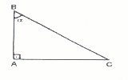
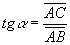
Pelo item 01:
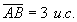
Daí:
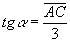
IPelo teorema de Pitágoras:
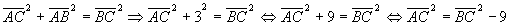
IIPelo item 01:
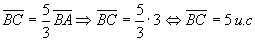
Substituindo o resultado acima em II:
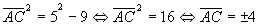
Como
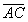
é um comprimento então desprezamos a raiz negativa, logo: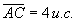
Substituindo o valor encontrado, para , na expressão I:
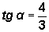
Agora calculemos o sen α :
sen (180 o - α) = sen 180 o ⋅ cos α - sen α ⋅ cos 180 o
mas: sen 180 o = 0 e cos 180 o = -1
logo: sen (180 o - α) = 0 ⋅ cos α - sen α ⋅ (-1) ⇒ sen (180 o - α) = sen α
mas:
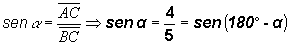
Logo:
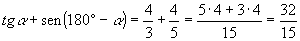
Conclusão: O item 16 é verdadeiro.
 Voltar
Voltar